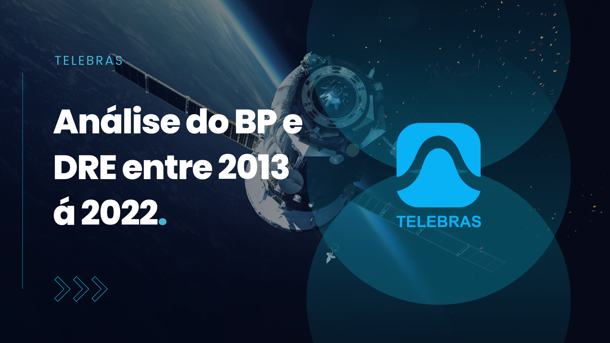
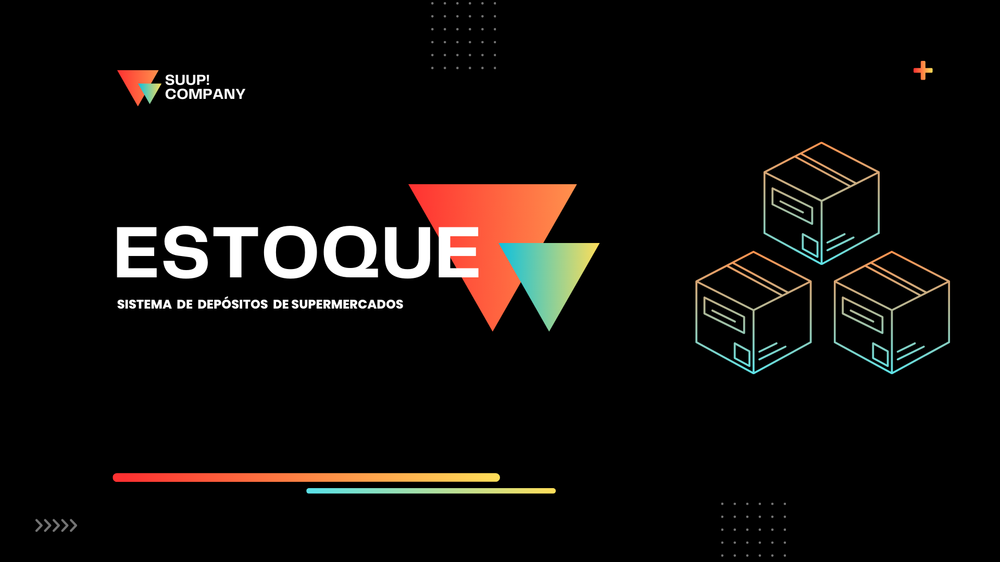
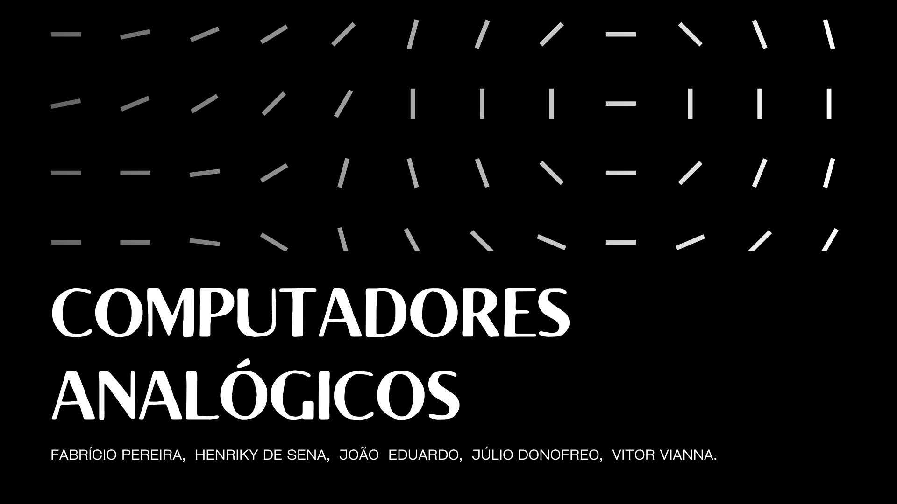
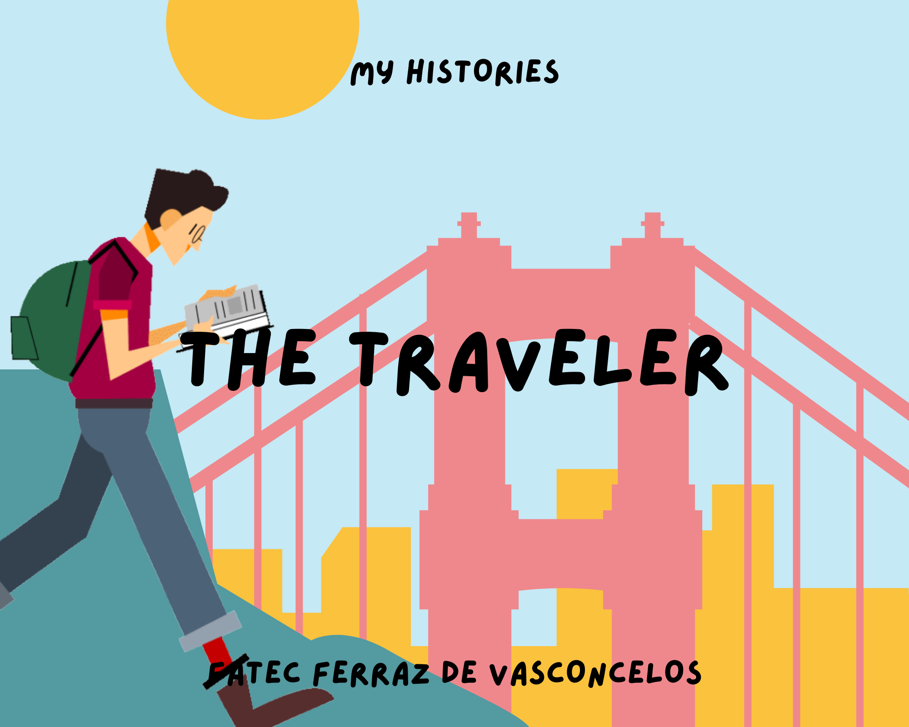
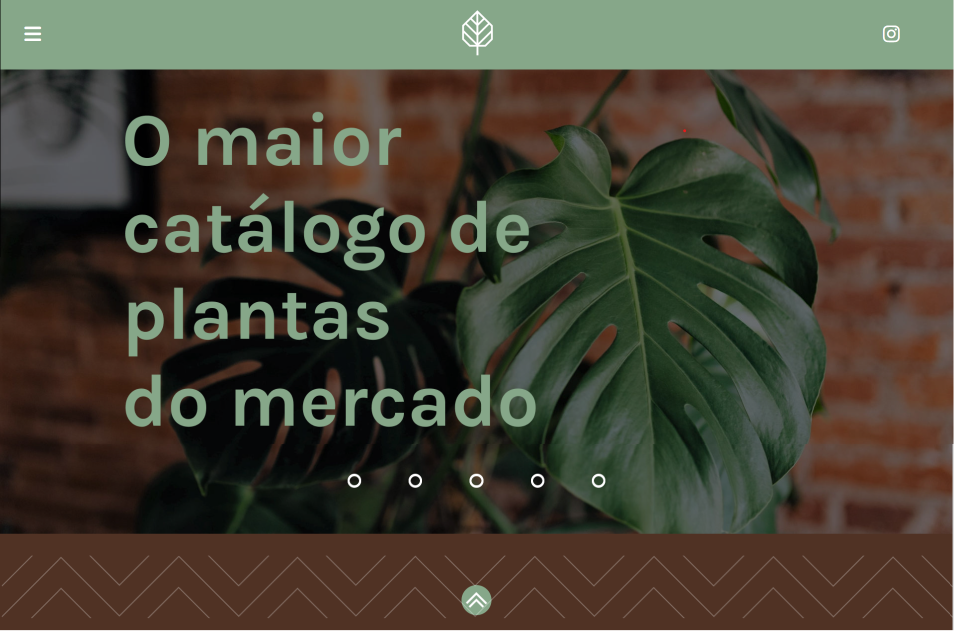

Início
Sobre
Portfólio
Contato
Slides e Apresentações

Análise do balanço patrimonial e demonstração de resultado durante 10 anos da empresa Telebras.

Apresentação sobre o gerenciamento de um estoque de supermercado, desmonstrando assim sua eficiência.

Apresentação realizada sobre computadores analógicos, explorando a história por trás de sua criação e de seus componentes.

História realizada durante as aulas de inglês do 3º semestre do curso de ADS.
Projetos

Catálogo destinado ao aprendizado sobre plantas e seus cultivos - em progresso.
Desafios
Em breve :]